<!doctype html>
<html lang="ja">
<head>
<meta charset="utf-8">
<title>《山形の極み》山形県　寿虎屋酒造 | リンベル　日本の極み</title>

<meta name="viewport" content="width=device-width,initial-scale=1">
<meta name="keywords" content="山形の極み,山形県,寿虎屋酒造,霞城壽,純米,山廃純米,大吟醸,純米大吟醸,雄町,地酒,上質,こだわり,厳選,リンベル" />
<meta name="description" content="リンベルが日本一と認めた「極みの味」、山形が生んだ極上のサーロインローストビーフ" />

<link rel="canonical" href="https://www.ringbell.co.jp/kiwami/etc/kotobukitoraya.html">

<link rel="stylesheet" type="text/css" href="assets-sel/css/common.css">
<link rel="stylesheet" type="text/css" href="assets-sel-sp/css/common.css">
<link rel="stylesheet" type="text/css" href="assets-sp/css/common.css">

<link rel="stylesheet" type="text/css" href="../css/nav.css">

<link rel="stylesheet" type="text/css" href="css/common_kiwami.css">
<link rel="stylesheet" type="text/css" href="css/kotobukitoraya.css">
<link rel="stylesheet" type="text/css" href="css/blog.css">

<?php include('../include/tag1.php'); ?>
</head>

<body>
<?php include('../include/tag-gtm.php'); ?>

<!-- header -->
<?php include('../include/header.php'); ?>
<!--/header --> 

<main>
<div id="sel-wrapper">
<div id="sel-containerA" class="clearfix">
<div id="sel-wrapMainR">

<!---------------------------- 記事エリア ---------------------------->
<div id="kiwami">

<h3 id="sub_tl"><span class="icon_yamagata">リンベルが日本一と認めた「極みの味」<br>
山形が生んだ極上の日本酒</span></h3>
<h2 id="main_tl">
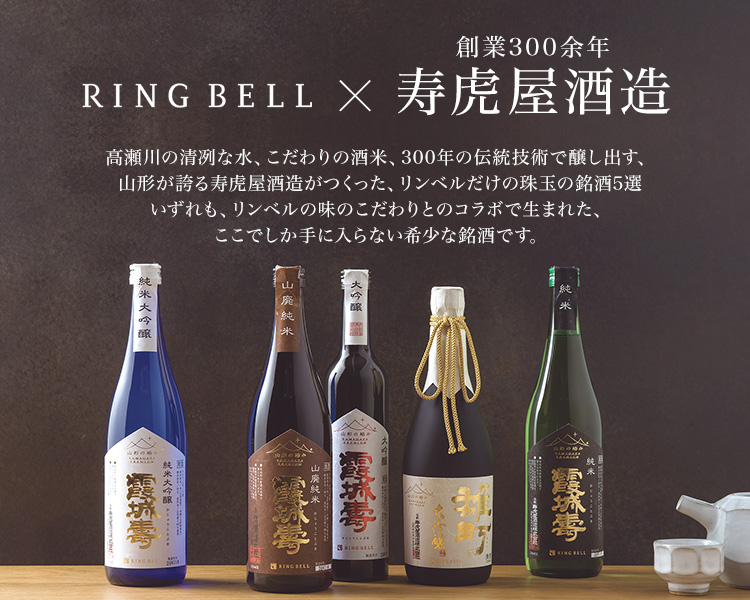
</h2>


<section id="point" class="wrap">
<h3 class="point_tl">ここが「極み」</h3>
<div class="point_list">
<ul class="icon_yamagata">
<li>仕込み水には蔵王山系高瀬川伏流水を使用。</li>
<li>吟醸酒以上には全麹仕込みのこだわり。</li>
<li>300年の伝統技術と近代設備が生む確かな味わい。</li>
<li>“幻の酒米”「雄町」の味わいをお届け。</li>
</ul>
</div>
</section>


<section id="lead" class="wrap">
<p class="txt">「寿虎屋（ことぶきとらや）酒造」は創業300余年、全国新酒鑑評会で10回以上も金賞を受賞している、山形県屈指の酒蔵です。</p>
<p class="txt">
今回リンベルの「山形の極み」としてご紹介するのは、寿虎屋酒造がつくる様々な銘柄の中の、看板銘柄「霞城壽（かじょうことぶき）」シリーズと、“幻の酒米”と呼ばれる“雄町”を使った「大吟醸 雄町」の計5品。<br>
「霞城壽」は、社名の一字でもあるおめでたい「寿」と、山形城の別称「霞城」を合わせて命名された日本酒で、純米、山廃純米、大吟醸、純米大吟醸の4種を取り揃えました。<br>
また「大吟醸 雄町」は、日本最古の純血原生種“幻の酒米”といわれる雄町を贅沢に使った逸品です。</p>
<p class="txt">
清冽な水、良質の米にこだわり、300年の伝統技術をしっかりと受け継いで生まれた山形の銘酒を、この機会にぜひお試しください。</p>
<ul>
<li>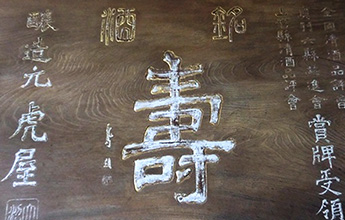</li>
<li>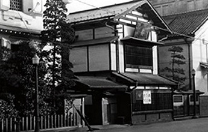</li>
</ul>
<p class="btn"><a href="#order">ご注文はこちら</a></p>
</section>


<section id="features" class="wrap">
<h3 class="features_tl"><span>商品のこだわりポイント</span></h3>

<div class="feature_box clearfix">
<h4 class="feature_box_tl">～　水へのこだわり　～<br>
井戸より湧き出る清冽な水が、日本酒の透明な美しさをつくりだす</h4>
<div class="feature_box_thumb"></div>
<div class="feature_box_txt">
<p> 東に蔵王山脈、西に秀峰月山を遠望し、ジブリ映画『おもひでぽろぽろ』の舞台にもなった紅花の里「高瀬」。その地を流れる高瀬川のほとりに佇む寿虎屋酒造は、江戸時代享保年間（西暦1715～1735年）に創業と、実に300年もの歴史を誇る酒蔵です。</p>
<p>
山形市が市政100周年を迎えた平成元年に、市内繁華街より現在の地に移転し、蔵を一新した寿虎屋酒造ですが、移転の際の用地探しでこだわったのは、なんといっても水です。酒造りの決め手は、麹、仕込み水、清酒酵母の3つといわれますが、なかでも蔵のすべての酒に使う水の性質が変わると、酒の味わいそのものが変わります。そこで、山形市内の水質調査を重ね、もとの蔵と変わらぬ質の水を使うことのできる現在の地を選び、移転を決めたのだとか。</p>
<p>
新社屋の井戸からこんこんと湧き出る豊富な水は、村山高瀬川を源流とする蔵王山系伏流水。<br>
村山高瀬川は季節により、下流では鮭の遡上、上流ではホタルが見られるほどの、山形が誇る清流ですが、今回ご紹介するすべてのお酒は、その伏流水を仕込み水に使用しています。<br>
この豊かで上質な水源の確保と、移転に伴い導入した近代酒造の施設と技術により、旧来のファンからは「酒の質が一段と高まった」とさらなる好評を博しています。</p>
</div>
</div>

<div class="feature_box clearfix">
<h4 class="feature_box_tl">～　酒米と麹へのこだわり　～<br>
良質の酒米と全麹仕込みというこだわり技が生み出す、至高の一滴</h4>
<div class="feature_box_thumb">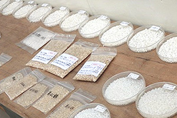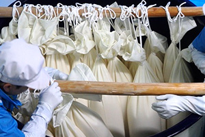</div>
<div class="feature_box_txt">
<p>酒造用の米は、食用の米とはまったく違う品種で、酒造好適米（酒米）と呼ばれます。</p>
<p>
今回ご紹介する霞城寿4種については、純米には「出羽の里」、山廃純米と純米大吟醸には「出羽燦々」、どちらも山形が生んだ名酒米を、大吟醸には、“酒米の王者“山田錦を使用。<br>
また「大吟醸　雄町」には山田錦の祖先にあたる、日本古来の原生種“幻の酒米”といわれる雄町を使い、それぞれ特徴のある味わいを生み出しています。<br>
寿虎屋酒造の日本酒造りでさらに特筆すべきなのは、吟醸酒以上には掛米（かけまい）を一切使用しない、全麹仕込みというこだわりの製法。</p>
<p>
掛米とは麹米と対になる言葉で、蒸して酒母や三段仕込みに掛ける（加える）原料米のこと。掛米を使わない全麹仕込みは、非常に費用と手間がかかるのですが、その分、酒質はしっかりとコクのある濃醇な味わいに仕上がります。<br>
また、全麹仕込みでつくった酒は、開栓しても1週間〜10日ぐらいは大きく味が落ちるということはありません。</p>
<p>
黄金色に輝く蔵王山系の伏流水で仕込まれ、杜氏や蔵人たちの技と酒への熱い心で醸し出される至高の一滴。300余年の歴史が築き上げてきた技と心のすべてが生きる、寿虎屋酒造の日本酒。その確かな味わいをお楽しみください。</p>
</div>
</div>

<div class="feature_box clearfix">
<h4 class="feature_box_tl">お酒にうるさいあの方もきっと喜ぶ “幻の酒米”「雄町」の味わい</h4>
<div class="feature_box_thumb">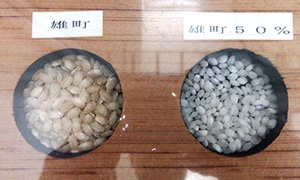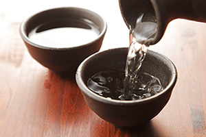</div>
<div class="feature_box_txt">
<p>今回ご紹介する「極み」のラインナップのひとつ、「大吟醸　雄町」に使われる酒米「雄町」は、一般的な酒米と違い品種配合などを一切行っていない、日本最古の混血のない原生種。「山田錦」や「五百万石」をはじめ、現代の多くの名酒米の祖先にあたる品種です。</p>
<p>
誕生は江戸時代末期の安政6年（1859年）。備前国・雄町村の篤農家が島根県の伯耆大山（ほうきだいせん）を参拝した帰路で珍しい2本の穂を見つけ、持ち帰って栽培したのが始まりといわれています。昔の米らしい野性味があり、幅のある複雑で濃厚な味わいと長い余韻を持つ味わいの酒が生まれると、密かに「雄町」の愛好家は昨今増加しています。<br>
しかし、背の高い穂が倒れやすく、純血種であることのあり病害虫にも弱いため、原産地の岡山県以外での栽培・収穫が難しいため “幻の酒米”ともいわれています。<br>
この希少な味わいをお楽しみいただけるのが、「大吟醸　雄町」。お酒にうるさいあの方への贈り物にも最適です。</p>
</div>
</div>

</section><!--/features-->


<section id="order" class="wrap">
<h3 class="order_tl"><span>ご注文はこちら</span></h3>
<ul class="order_list">

<li>
<div class="order_list_thumb">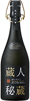</div>
<div class="order_list_info">
<p class="name">蔵人秘蔵　純米大吟醸生酒（原酒）</p>
<p>
通常日本酒は火入れ殺菌をするのですが、「ありのままの生酒を飲んでいただきたい」という思いから、搾りたてに一切手を加えていない無濾過原酒を槽場(ふなば)で瓶に詰めました。蔵人(くらびと)しか味わえなかった華やかな香り、キレのある味わい、のど越しのよさが味わえます。</p>
<p class="btn"><a href="https://www.ringbell.co.jp/ringbell/index.php/module/ShohinSagasu/action/ShohinList/?search_keyword=%E6%97%A5%E6%9C%AC%E3%81%AE%E6%A5%B5%E3%81%BF+%E7%B4%94%E7%B1%B3%E5%A4%A7%E5%90%9F%E9%86%B8%E7%94%9F%E9%85%92%E3%80%80%E8%94%B5%E4%BA%BA%E7%A7%98%E8%94%B5">ご注文はこちら</a></p>
</div>
</li>

<li>
<div class="order_list_thumb">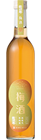</div>
<div class="order_list_info">
<p class="name">梅酒2本セット</p>
<p>
梅の実、氷砂糖、日本酒のみを使用した無添加梅酒です。上品な甘みの中に梅本来の風味・酸味のバランスが良く、濃厚で深い味わいです。</p>
<p class="btn"><a href="https://www.ringbell.co.jp/ringbell/index.php/module/ShohinSagasu/action/ShohinList/?search_keyword=%E6%97%A5%E6%9C%AC%E3%81%AE%E6%A5%B5%E3%81%BF%E3%80%80%E5%AF%BF%E8%99%8E%E5%B1%8B%E9%85%92%E9%80%A0%E3%80%80%E6%A2%85%E9%85%92">ご注文はこちら</a></p>
</div>
</li>

<li>
<div class="order_list_thumb">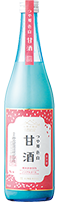</div>
<div class="order_list_info">
<p class="name">つや姫　色白　甘酒2本セット</p>
<p>
江戸時代中期に創業の約300 年の歴史を持つ酒造。仕込み水には、軟水である蔵王山系高瀬川伏流地下水を使い、吟醸酒以上は全麹仕込みという特別な製法で醸造しています。今回、山形県産のつや姫を贅沢に55％まで精米し、米麹のみでつくった糖類無添加ノンアルコールの甘酒です。自然な甘みが飲みやすく子供から大人まで幅広くお楽しみいただけます。</p>
<p class="btn"><a href="https://www.ringbell.co.jp/ringbell/index.php/module/ShohinSagasu/action/ShohinList/?search_keyword=%E6%97%A5%E6%9C%AC%E3%81%AE%E6%A5%B5%E3%81%BF%E3%80%80%E3%81%A4%E3%82%84%E5%A7%AB%E8%89%B2%E7%99%BD%E7%94%98%E9%85%92">ご注文はこちら</a></p>
</div>
</li>

<li>
<div class="order_list_thumb">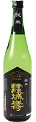</div>
<div class="order_list_info">
<p class="name">純米　霞城寿</p>
<p>
山形の酒米「出羽の里」を使用し、寒造り瓶詰めした旨口純米酒。骨太でしっかりとした味わい、辛さと苦味が効いたコクが特徴です。味わいを楽しむには温燗（ぬるかん）がお勧め。刺身、鯛やヒラメのカルパッチョなどとの相性がとても良いお酒です。</p>
<p class="btn"><a href="https://www.ringbell.co.jp/ringbell/index.php/module/ShohinSagasu/action/ShohinList/?search_keyword=%E6%97%A5%E6%9C%AC%E3%81%AE%E6%A5%B5%E3%81%BF%E3%80%80%E9%9C%9E%E5%9F%8E%E5%A3%BD%E3%80%80%E5%87%BA%E7%BE%BD%E3%81%AE%E9%87%8C">ご注文はこちら</a></p>
</div>
</li>

<li>
<div class="order_list_thumb">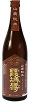</div>
<div class="order_list_info">
<p class="name">山廃純米　霞城寿</p>
<p>
山形県で開発された酒米「出羽燦々」を使用。やや琥珀色を帯び、スモーキーな香りを持つ純米酒です。辛口ですが、味わいとしては甘く、冷やより燗酒がお勧め。中華料理や、香りの似た燻製などが合います。</p>
<p class="btn"><a href="https://www.ringbell.co.jp/ringbell/index.php/module/ShohinSagasu/action/ShohinList/?search_keyword=%E6%97%A5%E6%9C%AC%E3%81%AE%E6%A5%B5%E3%81%BF%E3%80%80%E5%B1%B1%E5%BB%83%E7%B4%94%E7%B1%B3%E3%80%80%E9%9C%9E%E5%9F%8E%E5%A3%BD">ご注文はこちら</a></p>
</div>
</li>

<li>
<div class="order_list_thumb">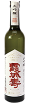</div>
<div class="order_list_info">
<p class="name">大吟醸　霞城寿</p>
<p>
35％まで磨きあげた兵庫県産「山田錦」を醸した、フェミニンな印象のきれいな喉越しの大吟醸。辛口ながらも、やわらかな口当たりで、上品な米の旨味をそのまま楽しんでいただけます。食前酒などにもお勧めです。</p>
<p class="btn"><a href="https://www.ringbell.co.jp/ringbell/index.php/module/ShohinSagasu/action/ShohinList/?search_keyword=%E6%97%A5%E6%9C%AC%E3%81%AE%E6%A5%B5%E3%81%BF%E3%80%80%E9%9C%9E%E5%9F%8E%E5%A3%BD%E3%80%80%E5%B1%B1%E7%94%B0%E9%8C%A6">ご注文はこちら</a></p>
</div>
</li>

<li>
<div class="order_list_thumb">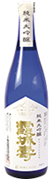</div>
<div class="order_list_info">
<p class="name">純米大吟醸　霞城寿</p>
<p>
山形の酒米「出羽燦々」を45%まで磨き、雑味のない味に仕上げた純米大吟醸。洗練された芳醇さが特徴で、口当たりがやわらかく、しかも後味はすっきり。純米好きの方には特にお勧めです。魚のせいろ蒸しのような、淡泊で上品な料理にあてるのがお勧めです。</p>
<p class="btn"><a href="https://www.ringbell.co.jp/ringbell/index.php/module/ShohinSagasu/action/ShohinList/?search_keyword=%E6%97%A5%E6%9C%AC%E3%81%AE%E6%A5%B5%E3%81%BF%E3%80%80%E7%B4%94%E7%B1%B3%E5%A4%A7%E5%90%9F%E9%86%B8%E3%80%80%E9%9C%9E%E5%9F%8E%E5%A3%BD">ご注文はこちら</a></p>
</div>
</li>

<li>
<div class="order_list_thumb">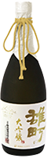</div>
<div class="order_list_info">
<p class="name">大吟醸　雄町</p>
<p>
“幻の酒米”「雄町」を48％まで磨いた高貴な印象の大吟醸。霞城寿の女性的な味わいに対し、男性的で硬質な味わいと、若々しいパイナップルのような吟香のある強い香りが特徴です。あっさりしたものから力強い味まで、どんな料理にも合います。</p>
<p class="btn"><a href="https://www.ringbell.co.jp/ringbell/index.php/module/ShohinSagasu/action/ShohinList/?rb2019---list__total=1&price_min=&price_max=&result_count=40&sort_order=r&total_rows=1&search_keyword=%E6%97%A5%E6%9C%AC%E3%81%AE%E6%A5%B5%E3%81%BF+%E9%9B%84%E7%94%BA+%E7%B4%94%E8%A1%80%E9%85%92%E7%B1%B3&cto=0&p=">ご注文はこちら</a></p>
</div>
</li>

</ul>
</section>


<section id="blog" class="wrap">
<h2 class="blog_tl"></h2>
<div id="include">

</div>
</section><!--/blog-->

</div>
<!---------------------------- /記事エリア ---------------------------->

</div><!-- sel-wrapMainR/end -->
</div><!-- sel-containerA/end -->
</div><!-- sel-wrapper/end -->
</main>

<!-- footer --> 
<?php include('../include/footer.php'); ?>
<!-- /footer --> 

<script type="text/javascript" src="../js/lib.js"></script> 
<script type="text/javascript" src="../js/nav.js"></script>
<script type="text/javascript" src="../js/script.js"></script>

<!--blog用-->
<script type="text/javascript">
	$(document).ready(function() {
	   $('#include').load('blog.html #kotobukitoraya');
	});
</script>
<!--/blog用-->

<script>
    $(function(){
      $('#voices dl').matchHeight();
    });
</script>

<?php include('../include/tag2.php'); ?>

</body>
</html>